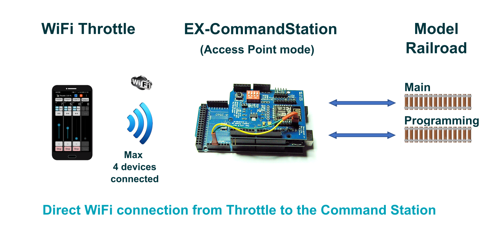
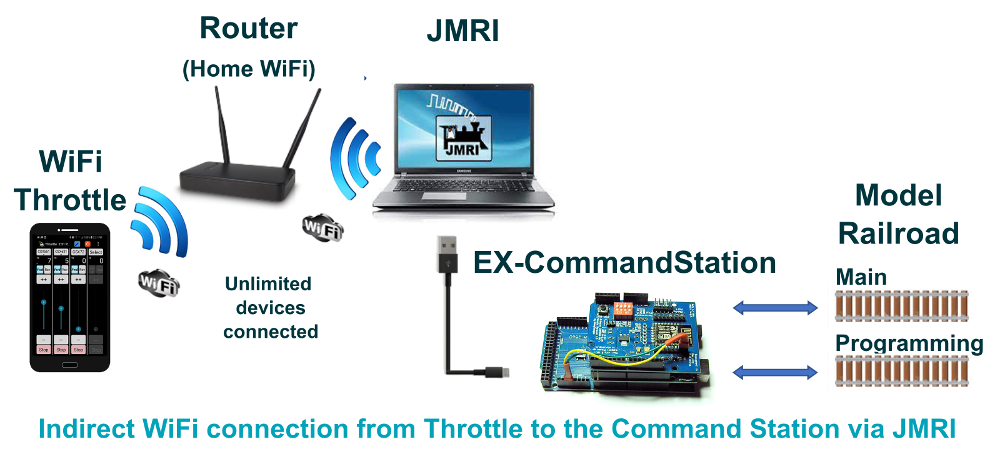

Choosing a Controller (Throttle)¶
You need just two things that work together to operate your model railroad:
The DCC++ EX Command Station (aka CS)
A Controller (aka Front-end, Cab, or Throttle)
The Command Station¶
The CS is covered in the Getting Started section, and is usually an Arduino microcontroller and a motor shield or motor board. The CS accepts instructions from a controller and generates packets that are transmitted to your track.
The Controller¶
Since the CS simply accepts commands to turn into signals for your layout, you need something that sends those commands to run your trains - a controller. It isn‚Äôt very practical to type something like <t 1 3 75 1> into a serial monitor to tell your train to move each time! üòâ A controller can be a hardware device like a handheld throttle (also called a Cab), an App that runs on your phone, a Web Page, or front-end software like JMRI or Rocrail that runs on a computer or Raspberry Pi.
Connection Types¶
Your controller can connect to the DCC++ EX Command Station several different ways, such as:
Direct connection using a USB cable
2 wires to an Arduino serial port
Ethernet
WiFi
Bluetooth
Remote connection (VNC, MQTT, etc.)
The most popular methods for connecting your throttle are with a USB cable, or wirelessly with WiFi or Bluetooth. Make sure to check the feature list to see if your controller uses the type of connection you prefer.
Wireless Connection Details¶
Direct (Without JMRI)¶
For those who just want to run trains and not use any other control software, the simplest method to get going is to download a compatible phone or tablet app and connect directly from your wireless device to the Command Station. You need a CS with a WiFi Shield or other type of WiFi board, or a Bluetooth board and a throttle that supports Bluetooth. Here is an image that represents a direct connection.
{kind=link}
With JMRI¶
For those who want the power of JMRI to operate a complex layout, you would install JMRI on a computer or Raspberry Pi and connect your throttle to JMRI wirelessly through its preferred method, usually the WiThrottle Server or Web Server Interface. Here is an image that shows connecting wirelessly to JMRI, and connecting JMRI via a USB cable to the CS.
{kind=link}
Command Language (API)¶
There are at least 3 ways for a throttle to connect to a Command Station; the DCC++ command language, WiThrottle command language, and via the JMRI Web Server command language. For an explanation of what these terms mean, and what that means to you, please see Protocols: WiThrottle, DCC++, and Web Servers Explained. DCC++ EX natively understands our own DCC++ API and the WiThrottle API, and will work with a direct connection to these throttles. However, you can connect throttles to the computer running JMRI, and use JMRI as the middleware to send commands to DCC++EX. JMRI uses DCC++ commands when speaking to the Command Station.
Compatible Throttles¶
Here is a list of some of the controllers you can use with DCC++EX. We work closely with developers to help them maintain compatibility with the DCC++EX Command Station. Check back on occasion, as new devices are being added all the time.
For more information on any of these throttles, you can click on their links below or see our Throttles Page Index.
Our WebThrottle-EX (DCC++ | USB/Serial)¶
The simplest option is to just use a throttle connected directly to the CS. The simplest of all is arguably WebThrottle-EX, connected via a USB cable from your computer and web browser directly to the Command Station. You have control of multiple locomotives and can operate turnouts. There is a way to replace the USB cable with a wireless connection, but we will cover that later in the Wireless USB Bridge section. Below is a picture of WebThrottle-EX with the side menu open. You can click on the image to see it full size.

Here are your connections, just a computer running a chromium-based browser, a USB cable, and your Command Station.
{kind=link}
For operating instructions see how to use WebThrottle-EX
Engine Driver (Android | WiThrottle | WiFi)¶
Engine Driver is a throttle app for your phone that can control multiple locos and your turnouts. It uses an interface called “WiThrottle” (for WiFi Throttle) and any WiThrottle compatible throttle will work with DCC++ EX. There are two ways to connect it; the first method is by connecting directly to the CS via WiFi. You will need a WiFi board connected to the CS (see Wifi Setup WiFi Setup).
The second method is to use JMRI and connect Engine Driver (ED) to the computer running JMRI. That computer would then connect to the CS via a USB cable (normally) or via a Wireless USB Bridge. The computer running JMRI can be just about any type of computer: PC, Mac, or Raspberry Pi. However, most operators like the Pi option because it is inexpensive, small, can mount under the layout, and has a free image file that you can flash to a Micro-SD card and have a full JMRI setup with WiFi with virtually no fuss.
DCCpp CAB (Android | DCC++ | WiFi, Bluetooth)¶
DCCpp CAB is a throttle that natively speaks the <DCC++> command language (API). It can connect via WiFi or Bluetooth! If you don’t need software like JMRI running on a computer, DCCpp CAB lets you connect directly to the CS.
See DCCpp CAB Page
WiThrottle (iOS | WiThrottle | WiFi)¶
WiThrottle is an app for iPhones and iPads. It can connect directly to the CS like Engine Driver does, or connect to JMRI on a computer and then have JMRI connect to the CS via a USB cable.
See WiThrottle Page
Locontrol (iOS | JMRI Web Server, DCC++ | WiFi)¶
Locontrol is a beautiful and functional throttle that uses the JMRI Web Server to connect. Soon it will be able to connect directly to the CS by using the <DCC++> Command set.
See Locontrol Page
DigiTrainsPro (Android, iOS, Windows | WiThrottle, DCC++ | WiFi)¶
This is the only throttle with a Windows App. It also has a beautiful user interface. Soon it will be able to speak directly to DCC-EX using our command language.
SRCPClient (iOS | WiThrottle, DCC++ | WiFi)¶
Operate up to 3 locos from your iOS device. It supports both WiThrottle AND the DCC++ APIs.
See SRCPClient Page
JMRI¶
JMRI is sort of the 800lb gorilla of front-ends! In its simplest form, it is a throttle, or a gateway to allow you to use Engine Driver, or a mouse or touchscreen, as a throttle without a WiFi board connected to the CS. The WiFi is built into the computer you use to run JMRI, and JMRI has a WiThrottle Server built into it. The computer running JMRI, in turn, connects to the CS with a USB cable. JMRI is a complex program. If you are seriously into your model railroading however, JMRI can provide a lot of value. It can handle your turnouts, outputs, and sensors. It lets you create rosters for your locos and a visual layout of your tracks. There isn’t much it can’t do. And it is free and open source, just like DCC++ EX!
Connecting via USB cable¶
Probably the way most people use JMRI is to have a Raspberry Pi running JMRI connected via a short USB cable to the DCC++ EX Command Station. They then use Engine Driver on their phone, connected to JMRI via WiFi as a throttle for their engines. If you want to actually operate using all the features of JMRI, you can connect a small monitor, keyboard, and mouse to your computer or Raspberry Pi. You can replace the USB cable with a USB Wireless Bridge which is covered in that section. But let’s look at another method next.
*TODO:insert diagram here*
Connecting via VNC¶
VNC stands for “Virtual Network Computing”, and it is a way to access a device remotely. Variations of this are called “Remote Desktop” in Windows, Teamviewer, Anydesk, etc. It is free and it lets you take another device, like a tablet, and have a viewport into the computer you are using to run JMRI. It literally is a “remote desktop”. Everything is running on your computer or Raspberry Pi, yet you can control it from a handheld wireless device with a touchscreen.
*TODO:insert diagram here*
USB Wireless Bridge¶
The USB Wireless Bridge is a pair of small, inexpensive devices that let you replace a USB cable with a wireless connection. You really could connect any two devices that would normally connect with a USB cable. The power of this system is that there is little or no configuration, and no changes need to be made to your controller or the CS. In our world, here are some of the ways you can use it:
Connect WebThrottle-EX running on a laptop or tablet wirelessly to the DCC++ EX Command Station
Connect a computer or Raspberry Pi running JMRI (or another front-end) to the Command Station
Connect normally-tethered handheld cabs (throttles) wirelessly to the Command Station
*TODO:insert diagram here*
For more information about all the throttles, see the Throttles Section>